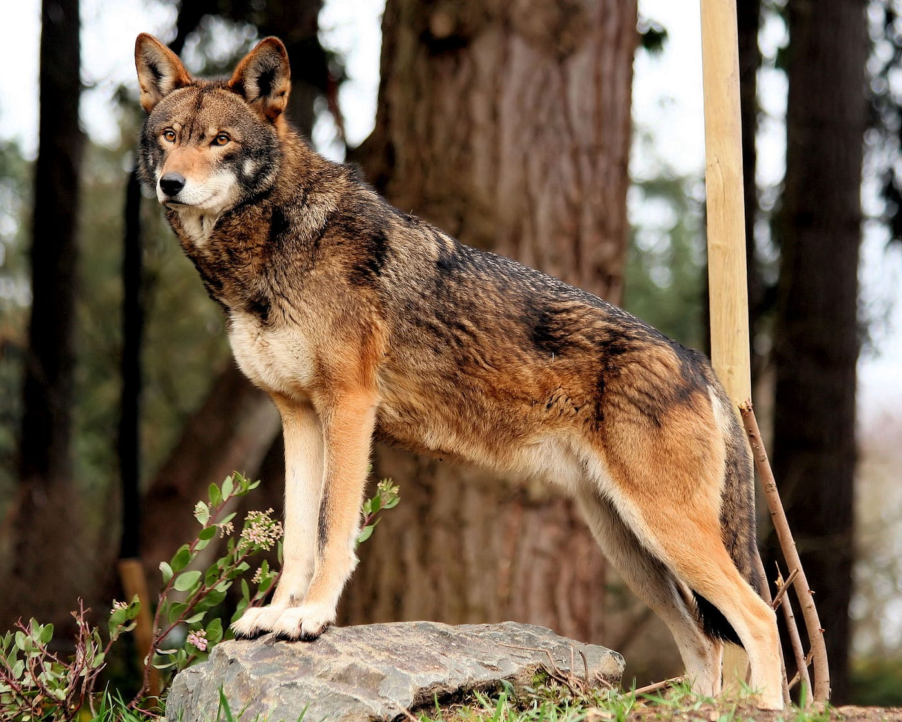
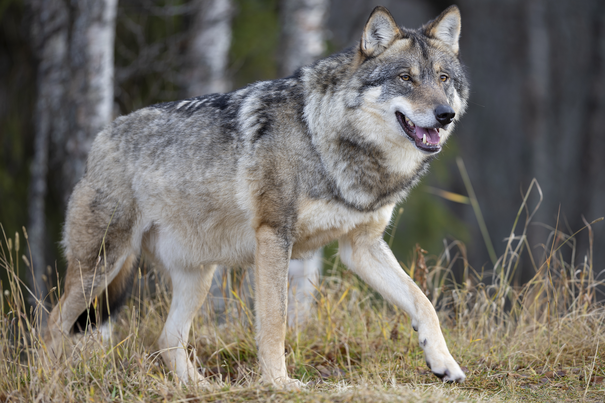

Species
There are two universally recognized species of wolves in world: the gray wolf (Canis lupus) and the red wolf (Canis rufus). In North America, recent research supports a third wolf species recognized by Canada, the eastern (Algonquin) wolf (Canis lycaon), which was previously considered a subspecies of the gray wolf. Similarly, there are ongoing debates on whether the Ethiopian wolf (Canis simensis), or Abyssinian wolf, belongs to the wolf or jackal family (Canis aureus).
Wolves are a highly adaptable species that can thrive in a wide range of habitats including temperate forests, mountains, tundra, taiga, and grasslands. They live in family units called packs, usually consisting of the breeding pair and their offspring. It is not uncommon for unrelated wolves to join another family or pack.
Red Wolves

Red Wolf
Over the last decade, the red wolf's wild population as fallen by 50 percent, where as of February 2025, there were currently 16 known red wolves remaining in the wild. In the 1960s, their population was decimated by intensive predator control programs and habitat loss. They were declared an endangered species in 1967, meaning it is considered in danger of extinction throughout a significant portion or all of its range. In an effort to save the species from extinction, the U.S. Fish and Wildlife Service (USFWS) established a captive-breeding program in 1973 and biologists captured as many red wolves as possible. From the 17 captured individuals, 14 of them became the foundation of a successful captive breeding program. In 1977, the captive red wolf pais produced their first litters and biologists took great care to maintain their wild insticts, hoping to avoid creating a dependency on humans. The United States Fish and Wildlife Service (USFWS) declared red wolves extinct in the wild in 1980.
Enough captive bred red wolves were bred by 1987 to begin a restoration program to return the species to a portion of their natural range in the southeast United States. That same year, they were reintroduced into the wild on the 120,000-acre Alligator River National Wildlife Refuge in northeastern North Carolina, and the first wild reproduction occurred in 1988. This reintroduction area has expanded, including federal and private lands, and now encompasses approximately 500,000 acres. The red wolf population peaked at over 130 individuals in 2006, but inaction and mismanagement by the USFWS, along with illegal killings, resulted in a steep population decline. There were no wild litters born in 2019 or 2020.
On April 19, 2018, USFWS completed a Species Status Assessment (SSA) and five-year review for the red wolf. It was confirmed that the red wolves could go extinct within eight years evident by its struggling wild population. The termination of the recovery program would result in the loss of the remaining red wolves. In 2014, the USFWS put a stop to the reintroduction of captive-born red wolves into the wild, and even began issuing kill permits to landowners. In 2016, a proposal was made to place most of the remaining wild red wolves into captivity. The U.S. Disctrict Court Judge Terrence Boyle ruled in January, 2021 that the USFWS must have a plan to resume the successful practice of releasing captive red wolves developed within three months. USFWS released two male red wolves in February, 2021, onto Alligator River National Wildlife Refuge in eastern North Carolina, increasing the known wild population from 8 to 10. In May 2021, USFWS released four adult red wolves into the Red Wolf Recover Area and were able to place four captive born pups with a wild red wolf mother, bringing the wild red wolf population to 18 individuals. One of the released females was found dead in June 2021, four more died in July 2021, and another was found dead in the fall. As of October 2021, only 8 known red wolves were known to remain in the wild, the lowest its been since the late 1980s.
Gray Wolves

Gray Wolf
The diet of a gray wolf includes elk, moose, mule deer, white-tailed deer, bison, caribou, mountain goats, beaver, rabbits, and musk oxen. Their size varies depending on the subspecies and where they belong. In general, male wolves will be larger than their female counterparts.
Gray wolf were once the most widely distributed wild mammals, inhabiting most of the available land in the northern hemisphere. Today, they only occupy about two-thirds of their formal range worldwide due to habitat destruction and persecution by humans. In the United States, they occupy about 10% of the land they used to. Populations occupy diverse lands in the northern hemisphere. Infrastructure development, deforestation, and urbanization have led to significant habitat loss for wolves. Their natural ecosystems are distrupted with the reduction of available hunting grounds, forcing wolves into smaller isolated territories.
Wolves are an integral part of their ecosystems, known as a keystone predator. Their presence or absense can profoundly impact the health and structure of their ecosystems. By preying on large predators, they help regulate populations, preventing overgrazing and allowing plants to thrive. This is known as a trophic cascade. Disruptions within ecosystems following the removal of wolves has motivated conservation efforts and reintroduction programs with the hopes of restoring balance and biodiversity.
In 1978, the gray wolf was reclassified as an endangered population at the species level (C. lupus) throughout the contiguous United States and Mexico. The Minnesota gray wolf population is the exception, instead classified as threatened. The grey wolf populations in Idaho and Montana recovered enough to become delisted in 2011. Globally, reintroduction programs have had mixed results, and requires significant collaboration between conservationists, communities, and policymakers.